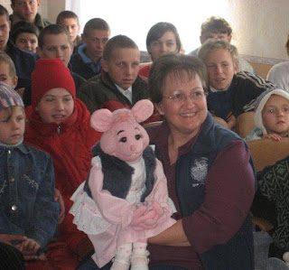

Voice from the past...
3/25/2012
From Joy Gray:
Hi Clinton: I had the privilege of meeting you at two FCM conventions way back in 1978 and 1979. My name then was Joy Stone and I came to the convention with a little pink mouse hand puppet named, Miss Squeaky. She was a simple little thing, but I ended up using her in ministry for a number of years. In 1984, a gal I also met at the FCM convention who made these incredible, lifelike gorilla puppets, Nancy Adams, made a professional Miss Squeaky puppet for me to use.
Although my ventriloquial adventures tapered over the years, I still occasionally pull out Miss Squeaky. Unlike me, she still looks young as ever.
{kind=link}

Here is a few photo of Miss Squeaky in action in recent years – visiting with orphans in Ukraine. (It was quite an experience doing ventriloquism with an interpreter!)
I still have the coursebooks and cassette tapes I purchased from Maher Studies way back in the mid 1970s. God bless you for helping so many aspiring ventriloquists over the years, and especially those of us who used our training for ministry purposes.